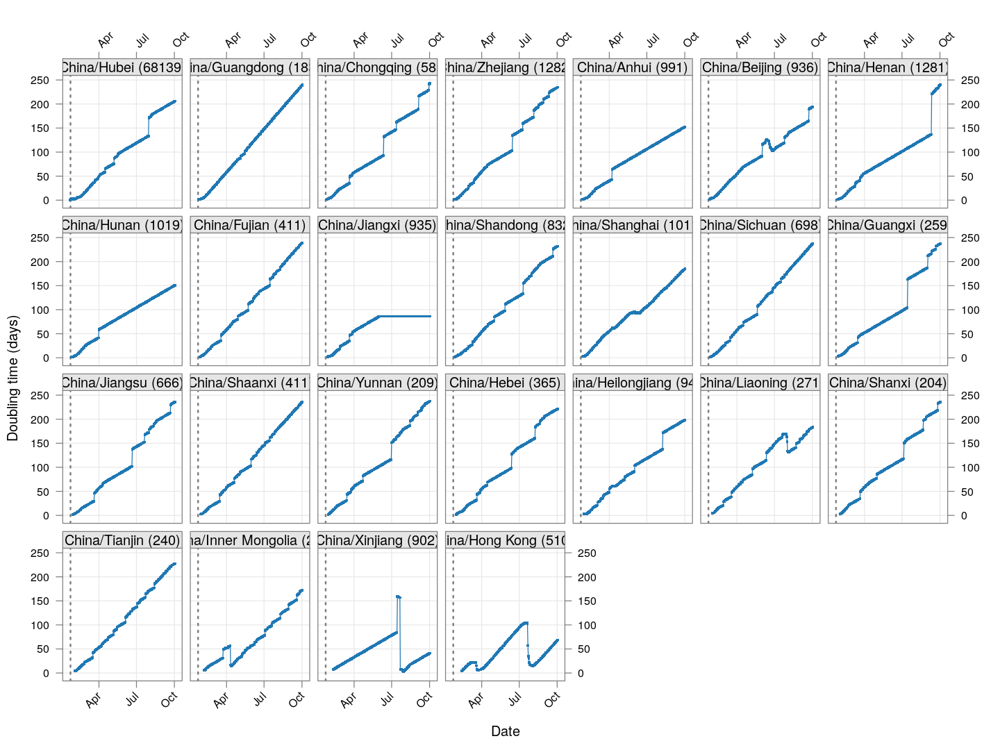

Doubling times of COVID-19 cases
Is “social distancing” working in your country? How is it doing compared to other countries? How long will it take for the number of cases to reach 50,000? Or 100,000?
This is an attempt to summarize how successfully various countries / regions are containing the spread COVID-19, based on a very simple summary statistic: how long it is taking to double the number of cases, and how this “doubling time” changes over time.
The analysis is based on the official number of confirmed cases, based on data provided by JHU CSSE on Github. Not all countries are testing equally aggressively (e.g., India), so these numbers may not reflect the actual number of cases. In the long run though, that does not matter as long as the proportion of true cases being detected remains more or less stable.
Here is the source of this analysis, in case you want to experiment with it.
Preparatory steps
First, download the data if not done already (to download the latest version, delete the file and run again):
TARGET <- "time_series_19-covid-Confirmed.csv"
if (!file.exists(TARGET))
download.file("https://github.com/CSSEGISandData/COVID-19/raw/master/csse_covid_19_data/csse_covid_19_time_series/time_series_19-covid-Confirmed.csv",
destfile = TARGET)This version was last updated using data downloaded on 2020-03-22.
Next, read in data:
Many of the high numbers are provinces in China, where spread is now more or less controlled. We consider them separately. Data for the US is also available separately by state, and we consider them separately as well. We exclude cases on cruise ships, which represent small populations.
covid.china <- subset(covid, `Country/Region` == "China")
covid.usa <- subset(covid, `Country/Region` == "US")
covid.row <- subset(covid, !(`Country/Region` %in%
c("China", "US", "Cruise Ship")))Next, we extract the time series data of each subset as a data matrix, with a crude “smoothing” to account for lags in updating data: If two consecutive days have the same total count followed by a large increase on the following day, then the most likely explanation is that data was not updated on the second day. In such cases, the count of the middle day is replaced by the geometric mean of its neighbours.
correctLag <- function(x)
{
n <- length(x)
stopifnot(n > 2)
for (i in seq(2, n-1))
if (x[i] == x[i-1])
x[i] <- sqrt(x[i-1] * x[i+1])
x
}
extractCasesTS <- function(d)
{
x <- t(data.matrix(d[, -c(1:4)]))
colnames(x) <-
with(d, ifelse(`Province/State` == "",
`Country/Region`,
paste(`Country/Region`, `Province/State`,
sep = "/")))
## Update labels to include current total cases
colnames(x) <- sprintf("%s (%g)", colnames(x), x[nrow(x), ])
apply(x, 2, correctLag)
}
xcovid.china <- extractCasesTS(covid.china)
xcovid.usa <- extractCasesTS(covid.usa)
xcovid.row <- extractCasesTS(covid.row)Outside the US and China, which countries are the worst affected in terms of the latest absolute numbers so far?
total.row <- sort(apply(xcovid.row, 2, tail, 1))
dotplot(total.row[ total.row > 199 ],
xlab = "Total cases (NOTE: log scale)",
scales = list(x = list(alternating = 3, log = TRUE,
equispaced.log = FALSE)))
Unfortunately, the latest numbers don’t tell the whole story. Different countries are at different stages of the pandemic, and just because the numbers are low now does not mean they will remain low. We should be more concerned about what is going to happen, and that depends on what measures various countries / regions are taking. How can we compare countries at various stages of spread in terms of something that is actually comparable?
The doubling time
It is not unreasonable to assume that without any preventive measures, the number of infections will grow exponentially in the early phases, when most of the population is uninfected. So estimating a growth rate assuming exponential growth may sound reasonable. Fortunately, most countries are taking preventive steps, so this estimate needs to be updated with time. We look at a very simple measure: at any given time, how many days ago was the number of cases half of the current count? We call this the doubling time.
This doubling time is a crude estimate of the current rate of spread of the virus. It is comparable across time as well as countries at different stages of spread, and additionally, it is not affected by the proportion of true cases that are being identified, as long as this proportion does not change substantially. For uncontrolled exponential growth, we expect the doubling time to remain constant. If measures are being effective, we should see the doubling time increasing.
To estimate the doubling times, we use approxfun() to do linear interpolation with day as function of number, and then use it to evaluate the “day” at which the number was half of the current count. To see how the doubling time has evolved over time, we compute the doubling time using data upto a given timepoint, but only starting from days when the total count has exceeded 50, so that the estimates are not meaningless.
tdouble <- function(n, x, min = 50)
{
if (x[n] < min) return (NA_real_)
x <- head(x, n)
x <- c(0, x[x > 0])
i <- seq_along(x)
f <- approxfun(x, i)
diff(f(max(x) * c(0.5, 1)))
}
doubling.ts <- function(region, d, min = 50)
{
t <- seq(as.Date("2020-01-22"), by = 1, length.out = nrow(d))
td <- sapply(1:nrow(d), tdouble,
x = d[, region, drop = TRUE], min = min)
data.frame(region = region, date = t, tdouble = td)
}The situation in China
Let’s do this first for the provinces of China that had at least 200 cases, and plot the evolution of doubling time over time. Instead of ordering the provinces by total number of cases, we order them by the number of days since the total count first exceeded 50. The dotted line at January 23 indicates the date of the initial lockdown of Wuhan, with more lockdowns following very soon. Although initially it was taking less that five days for the number of cases to double, the doubling time has systematically increased after the lockdown (possibly with a lag of around 10 days).
regions <- # at least 200 cases
names(which(apply(xcovid.china, 2, tail, 1) > 199))
devolution <-
droplevels(na.omit(do.call(rbind,
lapply(regions, doubling.ts,
d = xcovid.china, min = 50))))
xyplot(tdouble ~ date | reorder(region, tdouble, function(x) -length(x)),
data = devolution, type = "o", pch = 16, grid = TRUE,
as.table = TRUE, between = list(x = 0.5, y = 0.5),
abline = list(v = as.Date("2020-01-23"),
col = "grey50", lwd = 2, lty = 3))
As of March 22, the doubling time in Hong Kong had stabilized (at around 20 days) for roughly two weeks before decreasing rapidly; this is likely due to already infected travelers returning, and is also happening in Singapore and Taiwan.
The situation elsewhere
Countries with already widespread infections
Next, let’s look at similar plots for other countries (excluding USA) where the count is at least 1000. Again, the countries / regions are sorted by how long ago the number of cases first exceeded 50, and not by total cases.
regions <- # at least 1000 cases
names(which(apply(xcovid.row, 2, tail, 1) > 999))
devolution <-
droplevels(na.omit(do.call(rbind, lapply(regions, doubling.ts,
d = xcovid.row, min = 50))))
xyplot(tdouble ~ date | reorder(region, tdouble, function(x) -length(x)),
data = devolution, type = "o", pch = 16, grid = TRUE,
as.table = TRUE, between = list(x = 0.5, y = 0.5))
Unfortunately, most of these countries do not show systematic increase in the doubling time, which in most cases hovers around a value less than five days. This indicates uncontrolled exponential growth; at the current rates (as on March 21), for example,
Germany will reach 50,000 cases by March 25
Spain will reach 50,000 cases by March 27
France will reach 50,000 cases by March 31
UK will reach 50,000 cases between March 31 and April 8
Austria (currently less than 2500) may reach 50,000 cases by April 10
Portugal (currently around 1000) may actually reach 50,000 cases sooner
The countries that seem to be doing well are Denmark, Sweden, and Norway, and to a lesser extent Iran and even Italy.
Countries with less widespread infections
Next, we look at countries (excluding USA) where the count is at least 100 but less than 1000.
total.row <- apply(xcovid.row, 2, tail, 1)
regions <- # between 100 and 1000 cases
names(which(total.row > 99 & total.row < 1000))
devolution <-
droplevels(na.omit(do.call(rbind, lapply(regions, doubling.ts,
d = xcovid.row, min = 50))))
xyplot(tdouble ~ date | reorder(region, tdouble, function(x) -length(x)),
data = devolution, type = "o", pch = 16, grid = TRUE, ylim = c(NA, 20),
layout = c(0, 20), as.table = TRUE, between = list(x = 0.5, y = 0.5),
abline = list(v = as.Date("2020-01-23"), col = "grey50", lwd = 2, lty = 3))


It is too early to say how things will go for these countries, as the effect of social distancing measures will not be reflected before a couple of weeks.
USA
Finally, we look US states where the count is at least 100.
total.usa <- apply(xcovid.usa, 2, tail, 1)
regions <- names(which(total.usa > 99))
devolution <-
droplevels(na.omit(do.call(rbind, lapply(regions, doubling.ts,
d = xcovid.usa, min = 50))))
xyplot(tdouble ~ date | reorder(region, tdouble, function(x) -length(x)),
data = devolution, type = "o", pch = 16, grid = TRUE, ## ylim = c(NA, 20),
as.table = TRUE, between = list(x = 0.5, y = 0.5),
abline = list(v = as.Date("2020-01-23"), col = "grey50", lwd = 2, lty = 3))
Again, it is too early to say much. The initial steep climb is probably due to delay in starting to test, but generally things don’t look good, with the doubling time at around 5 days or less everywhere as of now.